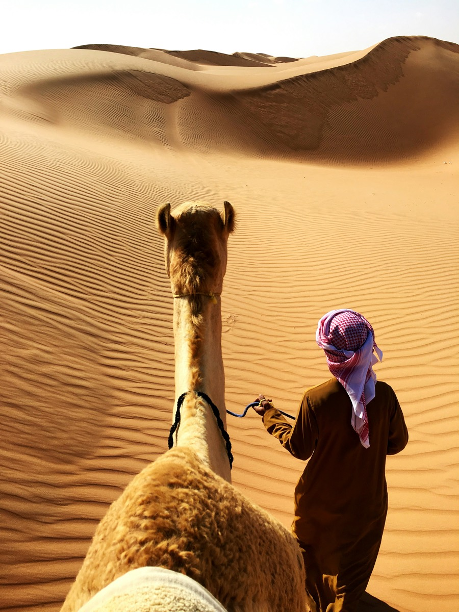

Wahiba Sands : dunes, camps dans le désert et meilleure période
Accès depuis Mascate, activités dans les dunes, fonctionnement des camps de nuit et meilleure période.

Qu'est-ce que le Wahiba Sands ?
Le Wahiba Sands, aussi appelé Sharqiya Sands, est un vaste champ de dunes dans l'est d'Oman, long d'environ 180 km du nord au sud. Les dunes passent de l'or à l'orange profond au fil de la journée, et les plus hautes atteignent environ 100 mètres. Au-delà des camps touristiques, le désert abrite des communautés bédouines et des campements saisonniers.
Comment aller au Wahiba Sands depuis Mascate
Les portes d'entrée habituelles sont Al Wasil et Bidiyah, en bordure du désert. Comptez environ 2 à 3 heures de route depuis Mascate, et environ 1 h 30 depuis Sour. La route jusqu'au bord du désert est goudronnée, mais le sable est mou et profond : seuls les 4x4 conduits par des chauffeurs expérimentés doivent s'y engager. La plupart des camps organisent un transfert depuis le bord du désert, ce qui est la solution la plus simple.
Que faire dans les dunes
- Balade en 4x4 dans les dunes avec un chauffeur qui connaît le terrain
- Montée sur une dune au coucher ou au lever du soleil, quand la lumière et la température sont idéales
- Balade à dos de chameau à travers les dunes
- Observation des étoiles la nuit, loin de toute lumière de ville
- Rencontre avec une famille bédouine pour comprendre la vie dans le désert
Comment fonctionnent les camps dans le désert
Les camps vont de la simple tente au camp confortable avec tentes climatisées et salle de bain privée. Deux points sont à vérifier avant de réserver : le camp est-il vraiment au cœur des dunes plutôt qu'en bordure, et est-il ouvert en été, car beaucoup ferment pendant les mois les plus chauds. Le Wi-Fi est limité ou absent dans la plupart des camps : prévoyez de vous déconnecter le temps d'une nuit.
Excursion à la journée ou nuit sur place ?
Une excursion d'une journée est possible, mais les plus beaux moments du Wahiba Sands sont au début et à la fin de la journée : coucher de soleil sur les dunes, ciel étoilé, puis lever du soleil avant la chaleur. Une visite en milieu de journée en fait manquer l'essentiel. Une nuit en camp est la meilleure façon d'en profiter.
Meilleure période
Les mois frais, d'octobre à avril environ, sont les plus agréables. En été, les températures peuvent dépasser 40 °C, et le mélange de sable et de soleil rend le désert difficile. Consultez notre guide de la meilleure période pour visiter Oman pour en savoir plus.
Que prendre avec soi
- Un foulard ou un keffieh, des lunettes de soleil et de la crème solaire
- Une petite lampe ou une lampe frontale pour circuler dans le camp la nuit
- Une couche chaude : les soirées du désert se rafraîchissent vite en hiver
- De l'eau et un sac qui peut recevoir du sable
- Des vêtements couvrants : Oman est un pays conservateur
Visiter le Wahiba Sands avec Wadi Escape
Une nuit en camp dans le désert fait partie de notre circuit Desert & Mountains Adventure, et le désert figure aussi dans notre Ultimate Oman Experience. Nous pouvons l'ajouter à n'importe quel voyage sur mesure. Vous hésitez sur la durée ? Lisez combien de jours prévoir à Oman.
Réponses rapides
Faut-il un 4x4 pour le Wahiba Sands ?
Oui. La route jusqu'au bord du désert est goudronnée, mais il faut un 4x4 et un chauffeur expérimenté pour entrer dans les dunes. La plupart des camps organisent le transfert.
Peut-on visiter le Wahiba Sands en excursion d'une journée depuis Mascate ?
Oui, c'est possible, mais le coucher de soleil, les étoiles et le lever du soleil sont les meilleurs moments du désert. Une nuit en camp permet d'en profiter.
À quelle distance de Mascate se trouve le Wahiba Sands ?
Environ 2 à 3 heures de route jusqu'à Al Wasil ou Bidiyah, en bordure du désert, puis un transfert dans les dunes.
Guides associés
Envie d'une nuit dans le Wahiba Sands ?
Dites-nous quand vous partez et nous intégrerons le désert à votre itinéraire.
Demandez votre devis gratuit →